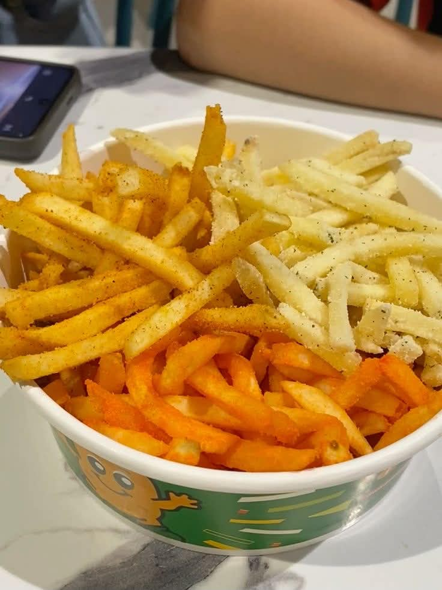
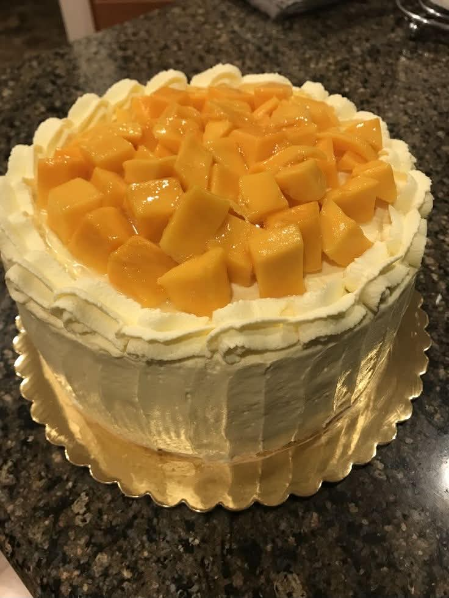
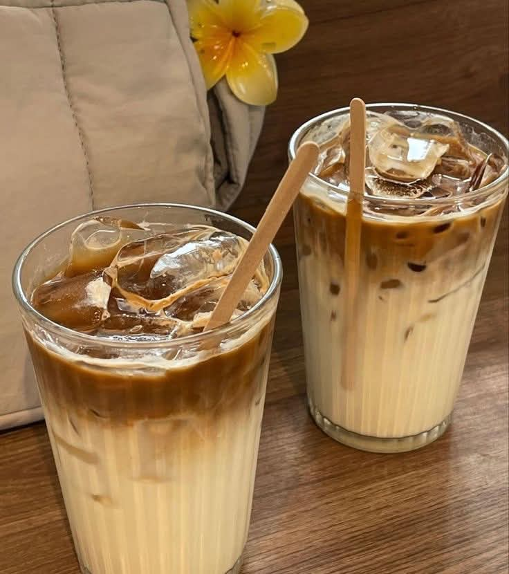
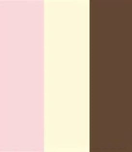

Below are my top five favorite foods:
My favorite colors are pink, white, and
brown because I find these color combinations
cute and simple.
And my favorite drink is coffee, and its
chemical formula: C8H10N4O2,
because it gives me energy and helps me to
stay focused, especially when I have a busy day
or need to study.
One of my favorite math expressions is
a2 + b2 = c2
because it is simple, useful, and shows the relationship
between the sides of a right triangle.
Pizza
Buldak

Fries
Sisig

Mango Flavored Cake

Coffee

Pink, Brown, White
This is my favorite song, SLOW DANCING IN THE DARK by Joji.
| My Favorite Things Summary | |
|---|---|
| Category | Favorite |
| Color | Pink, White, and Brown |
| Food | Pizza, Any spicy dishes, French Fries, Sisig, Mango flavored cake |
| Drink | Coffee |
| Math Expression | a2 + b2 = c2 |